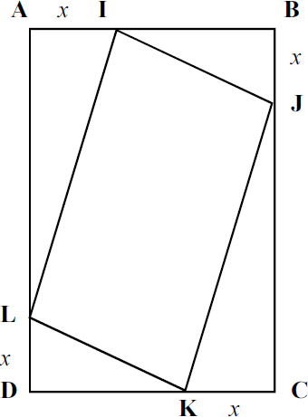

No retângulo ABCD ao lado, o lado AB mede 7 cm e o lado AD mede 9 cm. Os pontos I, J, K e L foram marcados sobre os lados AB, BC, CD e DA, respectivamente, de modo que os segmentos AI, BJ, CK e DL são congruentes.
Com base nessa situação, faça o que se pede nos itens a seguir e transcreva suas respostas para o Caderno de Respostas, nos locais devidamente indicados.